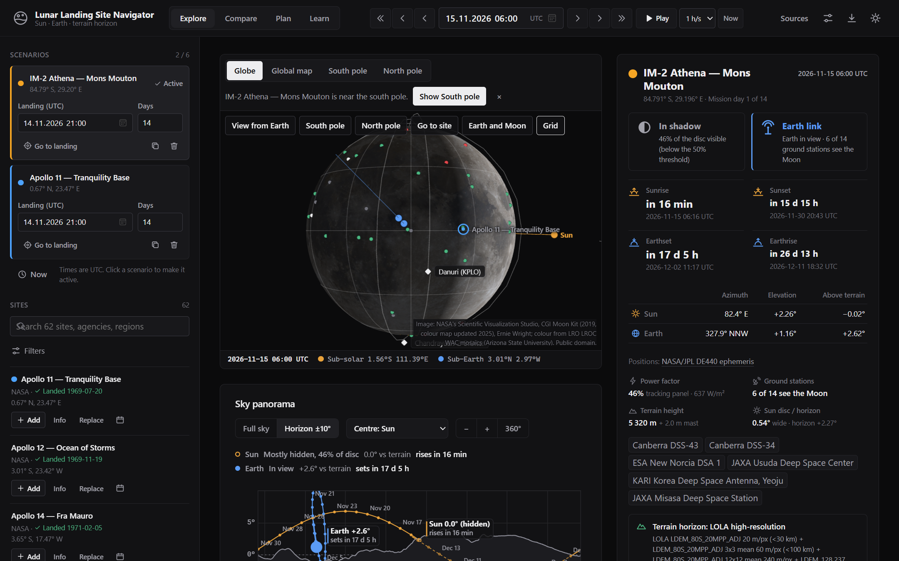
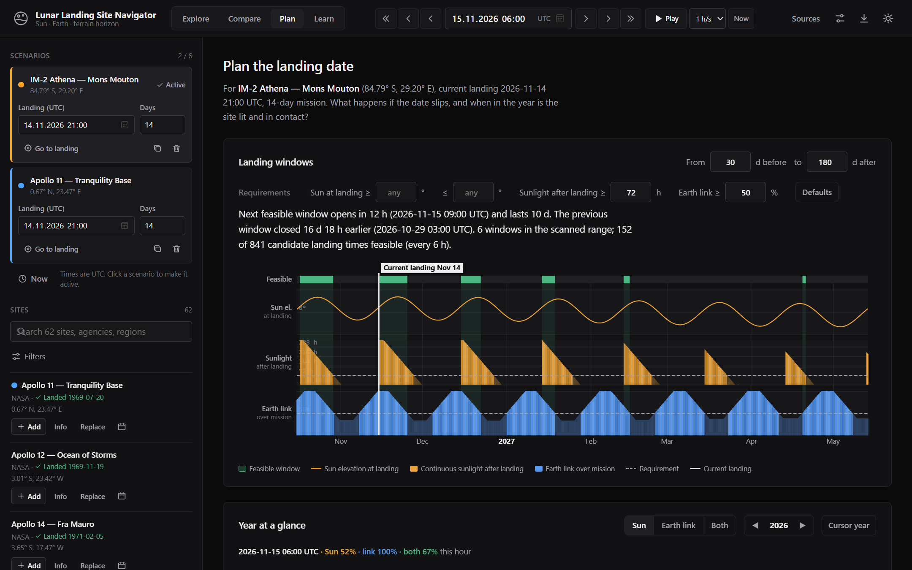
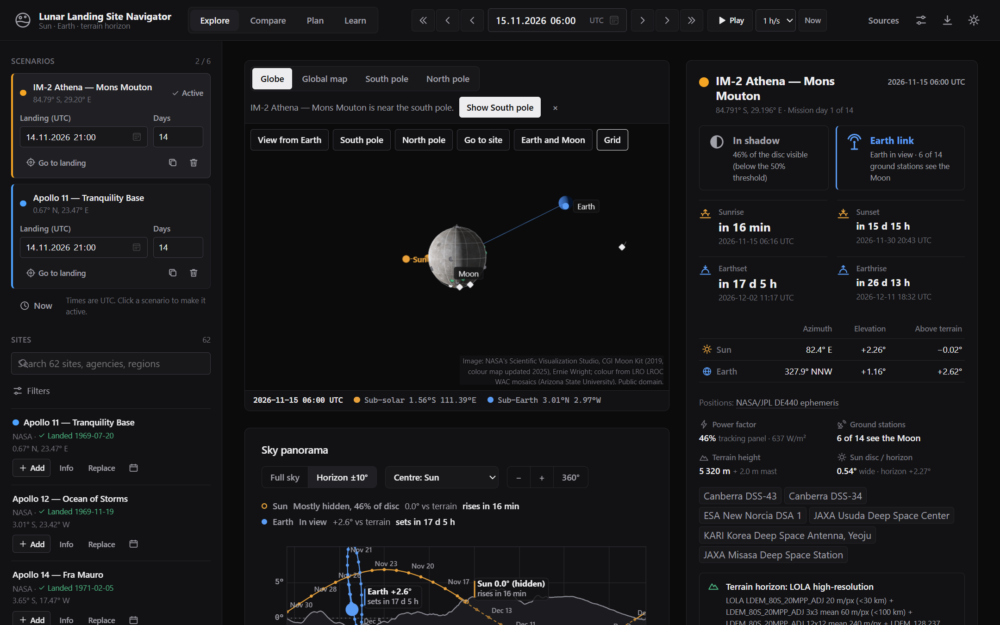

Lunar Landing Site Navigator answers in seconds, for any site and any date, against the real lunar skyline.
1 / 7Pick a site and a time. The status card counts down to sunset, sunrise, Earthset and Earthrise; the sky panorama shows the Sun and Earth against the terrain horizon; the timeline shows the whole mission.

Set the requirements — Sun elevation at landing, hours of continuous sunlight, communication coverage — and see which dates still work. Compare sites side by side and share the scenario as a link.

Zoom the globe out to the whole system: the Earth at its real size and distance, and spacecraft in lunar orbit from JPL Horizons. Together with the Learn view it shows students and the public why polar landings are hard — with the same data planners use.
